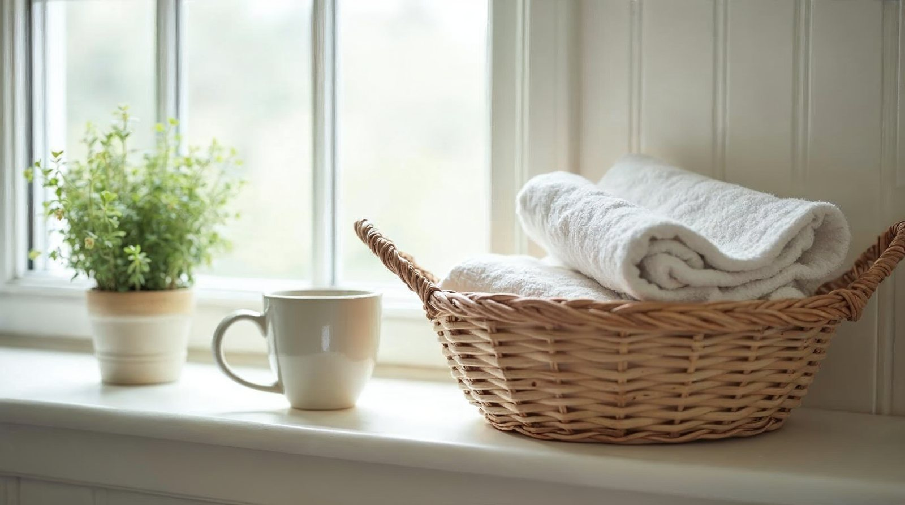
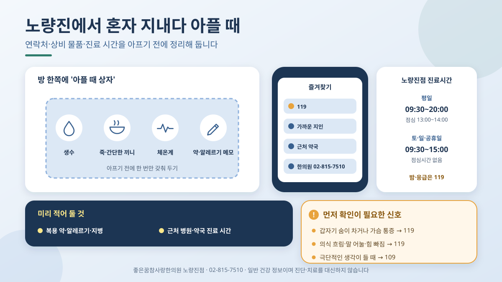

이종호 한의사 감수좋은꿈참사랑한의원 대표원장 (한의사 면허번호 19769)발행 2026-11-24 · 수정 2026-11-26
이 글의 차례
- 왜 미리 정리해 두면 좋을까요
- 수험생이 혼자 지내다 자주 겪는 불편은?
- 진료 시간 밖에 아프면 어떤 순서로 움직일까요?
- 상황별 예시
- 스스로 점검해 보세요
- 먼저 이렇게 여쭙니다
- 일상에서 먼저 해 볼 수 있는 것
- 아플 때를 위한 상자 하나 만들기
- 휴대폰에 미리 정리해 둘 것
- 근처 의료기관은 어떻게 정리해 둘까요?
- 누구에게 알려 둘까요?
- 아플 때 먹는 것은 어떻게 챙길까요?
- 아픈 날 공부는 어떻게 할까요?
- 마음이 많이 지칠 때도 준비가 필요해요
- 아프고 난 뒤 회복기는 이렇게 보내세요
- 겨울철에는 이런 것을 더 챙기세요
- 아프기 전에 할 수 있는 것도 있어요
- 한의원에서 함께 살필 수 있는 경우
- 첫 진료는 이렇게 진행됩니다
- 이렇게 기록해 오시면 상담이 쉬워집니다
- 이런 증상은 먼저 확인이 필요합니다
아프기 전에 연락처와 상비 물품, 근처 의료기관의 진료 시간을 미리 정리해 두면 혼자 지내다 갑자기 아플 때 훨씬 덜 당황합니다. 가족과 떨어져 노량진에서 혼자 시험을 준비하는 분이 많고, 밤에 갑자기 열이 나거나 배가 아플 때 어디에 연락해야 할지 몰라 막막했다는 이야기를 듣습니다.
혼자 사는 방에서 아픈 밤은 길게 느껴집니다. 몸도 힘든데 "이 정도로 병원에 가도 되나", "어디로 가야 하지" 하는 고민까지 혼자 해야 하니까요. 건강할 때 30분만 들여 준비해 두면 그 막막함을 크게 줄일 수 있습니다. 오늘은 그 30분 동안 무엇을 해 두면 좋을지 정리해 보겠습니다.
왜 미리 정리해 두면 좋을까요
- 혼자 지내면 아플 때 물과 끼니를 챙겨 줄 사람이 없어 작은 불편도 길어지기 쉽습니다.
- 갑자기 아프면 당황해서 병원 위치나 진료 시간을 찾는 데 시간이 걸립니다.
- 복용 약과 알레르기를 기억하지 못하면 응급실이나 진료실에서 확인이 늦어질 수 있습니다.
- 수험 생활의 피로와 불규칙한 식사·잠이 쌓이면 감기나 체기가 잦아지기도 합니다.
- 아플 때는 판단력이 흐려져, 미리 정해 둔 순서가 있으면 그대로 따르기만 하면 됩니다.
수험생이 혼자 지내다 자주 겪는 불편은?
노량진에서 혼자 지내는 수험생들이 갑자기 아파서 곤란했다고 이야기하는 경우는 대개 몇 가지로 모입니다. 어떤 일이 생기기 쉬운지 알면 무엇을 준비할지도 분명해집니다.
- 밤에 갑자기 열이 오르고 몸살이 나는 감기나 독감
- 급하게 먹거나 늦게 먹은 뒤의 체기, 복통, 설사
- 오래 앉아 공부하다 생긴 허리나 목의 갑작스러운 통증
- 계단이나 빙판길에서 넘어져 발목을 접질리는 일
- 시험 스트레스로 잠을 못 자고 두근거림이 심해지는 일
대부분은 피로가 쌓이고 식사와 잠이 흐트러진 시기에 몰려 옵니다. 모의고사 직후나 시험 막바지처럼 무리하는 때를 특히 조심해 주세요.
이 가운데 상당수는 밤이나 주말에 생겨 더 당황스럽습니다. 그래서 진료 시간 밖에 아플 때의 순서를 미리 정해 두는 것이 중요합니다.
진료 시간 밖에 아프면 어떤 순서로 움직일까요?
혼자 아플 때 가장 어려운 것은 "지금 무엇부터 해야 하지"라는 판단입니다. 순서를 미리 정해 두면 머리가 멍한 상태에서도 하나씩 따라갈 수 있습니다.
- 먼저 체온을 재고 시각과 함께 적기
- 물을 조금씩 마시고, 편한 자세로 눕거나 앉기
- 가족이나 가까운 사람에게 지금 상태를 알리기
- 아래 '먼저 확인이 필요합니다'에 적힌 신호가 있는지 살피기
- 그런 신호가 없다면 쉬면서 지켜보고, 다음 날 진료 시간에 맞춰 가까운 병원을 찾기
판단이 어렵다면 혼자 고민하지 말고 가까운 사람과 상황을 함께 이야기해 보세요. 누군가에게 말하는 것만으로도 생각이 정리됩니다.
상황별 예시
- 예를 들어 고시원 방에서 밤 열한 시에 열이 39도 가까이 오르고 몸이 떨리는 경우, 체온과 시각을 적어 두고 물을 마시며 가족에게 상황을 알립니다. 밤새 상태를 지켜보고 다음 날 아침 가까운 내과를 찾습니다.
- 예를 들어 저녁에 급하게 먹은 뒤 명치가 꽉 막히고 메스꺼운 경우, 따뜻한 물을 조금씩 마시며 쉬어 봅니다. 그날 밤은 더 먹지 말고 속을 비워 두는 것이 좋습니다.
- 예를 들어 아침에 일어나다 허리가 삐끗해 움직이기 힘든 경우, 무리하게 학원에 나가기보다 편한 자세로 쉬고 진료 시간에 맞춰 진찰을 받아 보세요.
스스로 점검해 보세요
- 가장 가까운 응급실 위치를 알고 있다
- 가족이나 친구 연락처가 휴대폰 즐겨찾기에 있다
- 방에 체온계와 생수가 있다
- 복용 중인 약과 알레르기를 메모해 두었다
- 근처 병원·약국·한의원의 진료 시간을 알고 있다
- 아플 때 물건을 부탁할 수 있는 사람이 근처에 한 명은 있다
이 목록은 한 번 채우고 끝나는 것이 아니라, 이사하거나 학원을 옮길 때마다 다시 확인하는 것이 좋습니다. 체크하지 못한 항목이 있다면 오늘 하나씩 채워 두세요. 모두 채워 두면 혼자 아픈 밤이 훨씬 덜 막막합니다.
먼저 이렇게 여쭙니다
- 가까이에 연락할 수 있는 가족이나 친구가 있나요?
- 집에 체온계와 상비약이 있나요?
- 복용 중인 약이나 알레르기가 있나요?
- 근처 병원과 약국의 위치를 알고 있나요?
- 지금 지내는 곳은 고시원인가요, 원룸인가요?
- 최근 자주 아프거나 피로가 쌓인 느낌이 있나요?
지내는 곳과 주변 사람을 여쭙는 것은 아플 때 현실적으로 무엇을 할 수 있는지 함께 따져 보기 위해서입니다. 고시원과 원룸은 조리, 공간, 도움을 받을 수 있는 정도가 달라 준비할 것도 조금씩 다릅니다.
일상에서 먼저 해 볼 수 있는 것
- 가까운 응급실 위치와 지인 연락처를 휴대폰 즐겨찾기에 등록하기
- 체온계, 생수, 죽처럼 아플 때 필요한 기본 물품 갖춰 두기
- 복용 중인 약과 알레르기를 휴대폰 메모에 적어 두기
- 근처 병원·약국·한의원의 진료 시간을 미리 확인해 두기
- 휴대폰 잠금 화면에서도 볼 수 있는 의료 정보와 긴급 연락처 설정해 두기
- 신분증과 건강보험 정보를 바로 챙길 수 있는 곳에 두기
아플 때를 위한 상자 하나 만들기
작은 상자나 지퍼백 하나에 아래 물건을 모아 두면, 아플 때 여기저기 찾지 않아도 됩니다.
- 체온계
- 약사와 상의해 고른 해열진통제, 소화제, 밴드
- 생수 몇 병, 전자레인지에 데우는 죽이나 누룽지, 두유
- 마스크, 휴지, 얇은 목도리
- 복용 약과 알레르기, 가족 연락처를 적은 메모 한 장
고시원처럼 조리가 어려운 곳이라면 데우지 않고 먹을 수 있는 음식을 함께 넣어 두세요. 상비약은 유통기한을 몇 달에 한 번씩 확인해 주세요.
휴대폰에 미리 정리해 둘 것
아플 때 가장 먼저 손에 잡히는 것이 휴대폰입니다. 메모 한 장에 아래 내용을 모아 두면 응급실이든 진료실이든 바로 보여 줄 수 있습니다.
- 이름, 생년월일, 지금 사는 곳 주소
- 지병, 다니는 병원, 복용 중인 약 이름과 용량
- 알레르기가 있는 약이나 음식
- 가족과 가까운 친구 연락처
- 가까운 응급실, 밤에도 여는 약국, 자주 가는 병원과 한의원의 진료 시간
주소는 고시원 호수까지 적어 두세요. 아플 때 누군가를 부르거나 배달을 받을 때 정확한 주소가 바로 필요합니다.
근처 의료기관은 어떻게 정리해 둘까요?
이사 오고 나서 한 번만 시간을 들여 동네 지도를 살펴보세요. 학원과 집 사이, 집 근처에 어떤 곳이 있는지 알아 두면 아플 때 검색하느라 헤매지 않아도 됩니다.
- 내과나 가정의학과처럼 감기와 배탈을 볼 수 있는 곳
- 밤과 주말에도 여는 약국
- 가장 가까운 응급실과 그곳까지 가는 방법
- 목·허리 통증이나 체기, 피로를 상담할 수 있는 한의원
정리한 곳은 지도 앱에 즐겨찾기로 저장하고, 진료 시간을 메모에 함께 적어 두세요. 좋은꿈참사랑한의원은 서울 동작구 만양로2길 2 신성빌딩 3층·5층에 있고, 전화(02-815-7510)나 네이버 예약, 카카오톡 상담으로 미리 여쭤 보실 수 있습니다.
누구에게 알려 둘까요?
혼자 지내더라도 내 상태를 알고 있는 사람이 있으면 마음이 한결 놓입니다. 아플 때만 연락하기보다 평소에 미리 이야기해 두는 것이 좋습니다.
- 가족에게 지금 사는 곳 주소와 함께 다니는 학원 이름 알려 두기
- 같은 학원이나 스터디의 친구와 아플 때 서로 물건을 부탁하기로 약속하기
- 하루 한 번 가족과 짧게 안부를 주고받기
- 고시원이라면 관리하시는 분께 비상시 연락처 남겨 두기
연락할 사람이 있다는 것만으로도 아픈 밤의 불안이 한결 줄어듭니다. 부탁하는 것을 미안해하지 마시고, 나도 친구가 아플 때 도와주면 됩니다.
아플 때 먹는 것은 어떻게 챙길까요?
혼자 아플 때는 먹는 일이 가장 먼저 무너집니다. 입맛도 없고 사러 나갈 기운도 없어 굶게 되면 회복이 더 늦어지기 쉽습니다.
- 열이 있을 때는 미지근한 물이나 보리차를 한 시간에 몇 모금씩
- 죽, 미음, 계란국, 두부처럼 부드럽고 따뜻한 음식 조금씩
- 배가 아프고 설사를 할 때는 기름진 음식과 우유, 찬 음료 피하기
- 배달 앱이나 장보기 앱에 죽과 생수, 과일을 미리 담아 두기
입맛이 전혀 없다면 국물 몇 숟가락이라도 괜찮습니다. 못 먹은 날은 그 사실을 적어 두면 진료 때 회복 흐름을 살피는 데 도움이 됩니다.
아픈 날 공부는 어떻게 할까요?
혼자 시험을 준비하는 분일수록 하루 쉬는 것이 크게 느껴집니다. 하지만 아픈 몸으로 공부하면 남는 것은 적고 회복은 늦어지기 쉽습니다.
- 열이 있는 날은 공부를 내려놓고 물, 음식, 잠에 집중하기
- 열이 내리면 평소의 절반 정도로 복습 위주의 공부부터
- 쉬는 동안 "회복한 뒤 할 일"을 짧게 적어 두고 공부 걱정은 거기 맡기기
- 다시 시작할 때는 밤샘을 피하고 잠을 먼저 챙기기
쉬는 날도 준비의 일부라고 생각해 주세요. 하루를 아끼려다 일주일을 앓는 경우가 적지 않습니다.
마음이 많이 지칠 때도 준비가 필요해요
혼자 지내는 수험 생활은 몸만큼 마음도 지치기 쉽습니다. 아플 때 외로움과 불안이 한꺼번에 몰려온다는 이야기를 자주 듣습니다.
- 힘들 때 이야기할 수 있는 사람 한두 명을 정해 두기
- 하루 한 번은 공부 이야기가 아닌 대화 나누기
- 잠을 거의 못 자거나 기분이 크게 가라앉는 날이 이어지면 혼자 버티지 말고 정신건강의학과나 상담 기관의 도움 받기
아프고 난 뒤 회복기는 이렇게 보내세요
열이 내리고 배가 편해지면 바로 원래 일정으로 돌아가고 싶어집니다. 그런데 회복이 덜 된 채 무리하면 피로와 기침, 더부룩함이 오래 남는 경우가 많습니다.
- 회복 후 사흘에서 일주일은 밤샘과 새벽 공부 피하기
- 끼니를 거르지 않고 부드러운 음식부터 천천히 늘리기
- 평소보다 30분 일찍 잠자리에 들기
- 걷기처럼 가벼운 움직임부터 다시 시작하기
한의학에서는 앓고 난 뒤 기운이 덜 돌아온 상태에서 무리하면 작은 불편이 오래 이어진다고 봅니다. 그래서 아프고 난 뒤 피로가 남는 분께 잠과 식사, 땀이 나는 모습을 함께 여쭙습니다.
겨울철에는 이런 것을 더 챙기세요
찬 바람이 부는 계절에는 감기와 몸살이 잦고, 빙판길에서 넘어지는 일도 늘어납니다. 노량진처럼 언덕과 계단이 많은 동네라면 조금 더 신경 써 주세요.
- 목도리와 장갑으로 목과 손을 따뜻하게 하기
- 미끄럼이 덜한 신발 신기, 계단에서는 난간 잡기
- 난방으로 방이 건조하면 젖은 수건 널어 두기
- 따뜻한 물을 담을 수 있는 물병 챙겨 다니기
아프기 전에 할 수 있는 것도 있어요
준비만큼 중요한 것은 아플 일을 조금 줄이는 것입니다. 수험 생활에서 모든 것을 지키기는 어렵지만 몇 가지만 챙겨도 자주 아픈 흐름을 줄일 수 있습니다.
- 하루 세 끼 가운데 두 끼는 밥과 반찬이 있는 식사로
- 잠은 여섯 시간 이상, 잠드는 시각은 일정하게
- 50분 공부 뒤에는 일어나 몸을 움직이기
- 손 자주 씻기, 사람 많은 곳에서는 마스크 챙기기
- 하루 20분은 걷거나 햇빛 쐬기

한의원에서 함께 살필 수 있는 경우
- 갑작스러운 증상이 지나간 뒤 남은 피로나 불편이 이어지는 경우 생활 리듬과 함께 살핍니다.
- 자주 체하거나 감기에 잘 걸리는 경우 식사와 잠을 함께 살핍니다.
좋은꿈참사랑한의원에서는 처음 오시면 접수 뒤 모든 분께 맥을 짚으며 불편한 곳과 생활을 여쭙고, 필요할 때 설진·초음파 등으로 더 살핀 다음 치료와 귀가 전 안내로 이어집니다. 다시 오실 때는 지난번 이야기부터 이어서 여쭙기 때문에 처음부터 다시 설명하지 않으셔도 됩니다.
병원에서 치료를 받았거나 약을 드시는 중이라면 진료 때 알려 주세요. 겹치거나 조심할 부분을 확인하고, 드시던 약은 임의로 끊지 않도록 안내합니다.
첫 진료는 이렇게 진행됩니다
처음 오시면 접수 뒤 불편한 곳과 시작된 때, 지내는 곳의 환경과 식사·잠을 차례로 여쭙습니다. 모든 분께 맥을 짚고, 필요하다고 판단되면 설진이나 초음파로 더 살핍니다.
병원 확인이 먼저 필요하다고 판단되면 그 점을 먼저 말씀드립니다. 함께 살필 수 있는 경우에는 그날 할 치료와 함께 혼자 지내며 챙길 생활 계획을 정하고, 귀가 전 다음 진료까지 지켜볼 점을 알려 드립니다.
이렇게 기록해 오시면 상담이 쉬워집니다
- 복용 중인 약 이름과 용량, 알레르기
- 지병과 다니는 병원
- 가까운 지인 연락처와 지금 사는 곳 주소
- 근처 병원·약국·한의원의 진료 시간
아팠던 날이 있었다면 날짜와 증상, 어떻게 지나갔는지를 짧게 적어 두세요. "11/10 밤 열 38.5, 다음 날 내과, 사흘 뒤 기침만 남음"처럼 한 줄이면 충분합니다. 이런 기록이 모이면 내가 어떤 때 자주 아픈지 보이기 시작합니다.
이런 증상은 먼저 확인이 필요합니다
- 갑자기 숨이 차거나 가슴이 아픈 경우, 의식이 흐려지거나 말이 어눌해지거나 팔다리에 힘이 빠지는 경우
- 스스로를 해칠 생각이 들면 ☎ 109로 바로 연락하세요.
이런 신호가 있으면 한의원보다 가까운 병원이나 응급실을 먼저 찾으세요.

여쭙는 것
- 가까이에 연락할 수 있는 가족이나 친구가 있나요?
- 집에 체온계와 상비약이 있나요?
- 복용 중인 약이나 알레르기가 있나요?
생활에서 해 볼 것
- 가까운 응급실 위치와 지인 연락처를 휴대폰 즐겨찾기에 등록하기
- 체온계, 생수, 죽처럼 아플 때 필요한 기본 물품 갖춰 두기
- 복용 중인 약과 알레르기를 휴대폰 메모에 적어 두기
한의원에서 함께 살필 것
- 갑작스러운 증상이 지나간 뒤 남은 피로나 불편이 이어지는 경우 생활 리듬과 함께 살…
- 자주 체하거나 감기에 잘 걸리는 경우 식사와 잠을 함께 살핍니다.
먼저 확인이 필요한 신호
- 갑자기 숨이 차거나 가슴이 아픈 경우, 의식이 흐려지거나 말이 어눌해지거나 팔다리에…
- 스스로를 해칠 생각이 들면 109로 바로 연락하세요.
한눈에 보는 표
| 구분 | 핵심 |
|---|---|
| 여쭙는 것 | 가까이에 연락할 수 있는 가족이나 친구가 있나요? 집에 체온계와 상비약이 있나요? |
| 생활에서 해 볼 것 | 가까운 응급실 위치와 지인 연락처를 휴대폰 즐겨찾기에 등록하기 체온계, 생수, 죽처럼 아플 때 필요한 기본 물품 갖춰 두기 |
| 한의원에서 함께 살필 것 | 갑작스러운 증상이 지나간 뒤 남은 피로나 불편이 이어지는 경우 생활 리듬과 함께 살핍니다. 자주 체하거나 감기에 잘 걸리는 경우 식사와 잠을 함께 살핍니다. |
| 먼저 확인이 필요한 신호 | 갑자기 숨이 차거나 가슴이 아픈 경우, 의식이 흐려지거나 말이 어눌해지거나 팔다리에 힘이 빠지는 경우 스스로를 해칠 생각이 들면 109로 바로 연락하세요. |
자주 묻는 질문
밤에 아프면 한의원에 연락할 수 있나요?
진료 시간 밖에는 한의원에서 바로 도와드리기 어려워, 밤에도 문을 여는 근처 병원과 약국을 미리 찾아 휴대폰에 메모해 두시기를 권합니다.
한의원 전화번호를 알려 주세요.
좋은꿈참사랑한의원 전화는 02-815-7510입니다.
상비약은 무엇을 갖춰 두면 좋을까요?
해열진통제나 소화제, 밴드처럼 기본적인 것을 약사와 상의해 갖춰 두고, 복용 중인 약과 겹치지 않는지 확인하세요.
한의원은 어떻게 찾아가나요?
서울 동작구 만양로2길 2 신성빌딩 3층·5층입니다. 노량진역(1·9호선) 3번 출구 쪽에서 마을버스 동작01번을 타고 신동아리버파크 정류장에서 내리면 건너편 건물입니다.
진료 시간은 어떻게 되나요?
좋은꿈참사랑한의원은 평일 09:30~20:00(점심 13:00~14:00), 토·일·공휴일 09:30~15:00에 진료합니다.
좋은꿈참사랑한의원은 재진 때 지난번 이야기부터 이어서 여쭙니다. 진료시간과 예약은 오시는 길에서 확인하세요.
어디서 상담받을 수 있나요?
좋은꿈참사랑한의원은 서울 동작구 만양로2길 2 신성빌딩 3층·5층(서울 동작구 상도동, 7호선 상도역 3번 출구 근처)에 있습니다. 한의사 3명(이종호 대표원장, 조영기 수석진료원장, 정원영 진료원장)이 진료합니다. 진료시간은 평일 09:30~20:00(점심 13:00~14:00), 토·일·공휴일 09:30~15:00이며, 방문 전 전화로 확인을 권합니다. 예약은 네이버 예약, 카카오톡 상담, 전화 02-815-7510로 받습니다.
이 글은 일반적인 건강 정보이며 개인의 진단이나 치료를 대신하지 않습니다. 증상이 있거나 복용 중인 약이 있다면 진료를 통해 확인하세요. 치료 효과는 개인마다 다를 수 있습니다.
작성 기준: 일반적으로 알려져 있는 건강 정보를 참고해 정리했습니다(대표원장 감수). 증상 기록은 1~2주 동안 하루 1회, 비슷한 시간에 적어 오시면 지난 상태와 비교하기 쉽습니다.